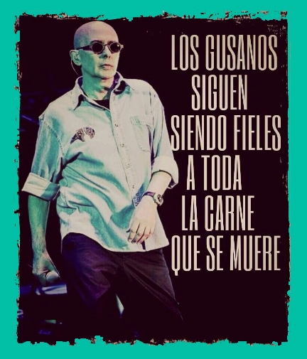
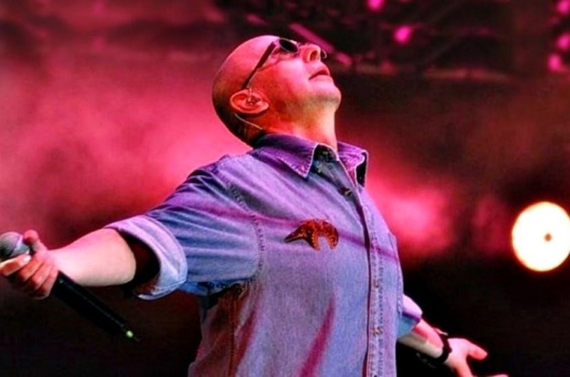
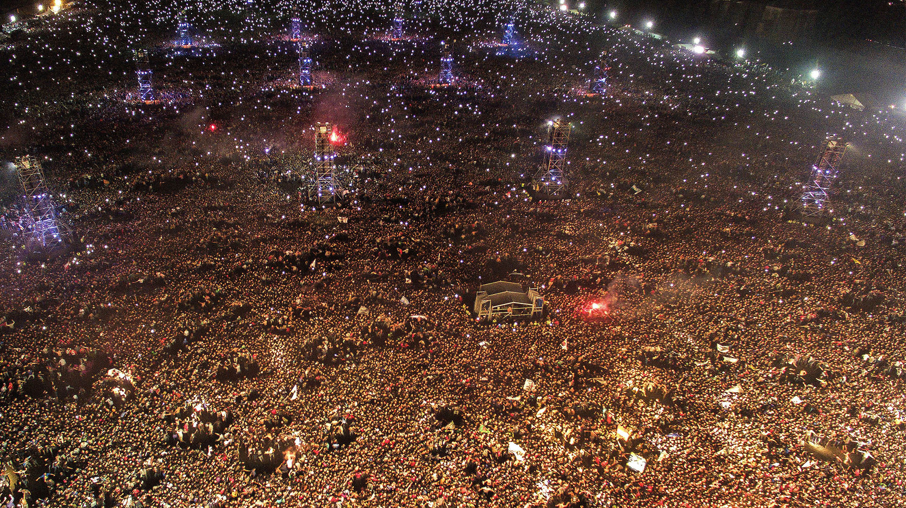
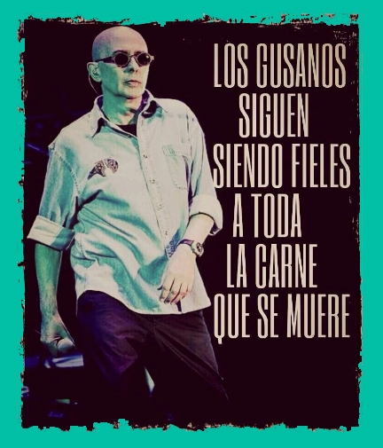
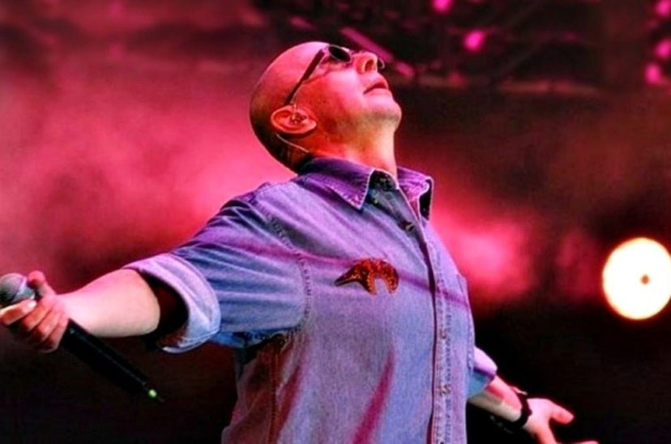
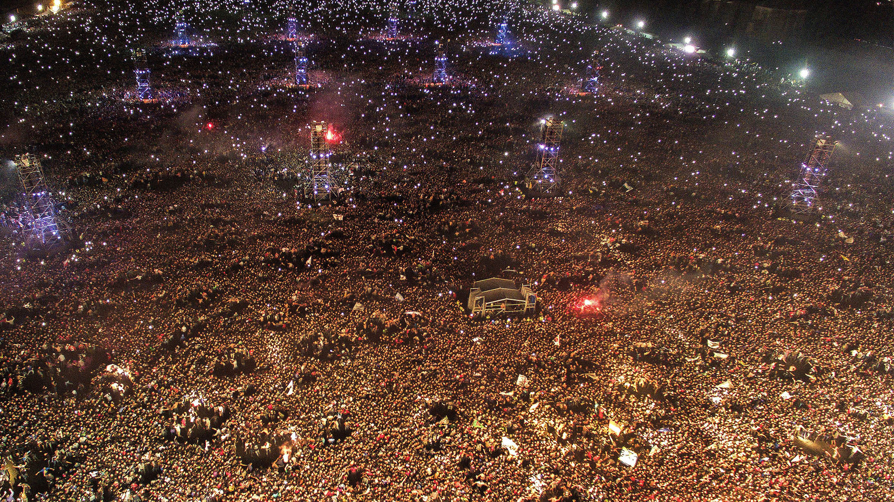

Qui és Indio Solari?
Carlos Alberto Solari, més conegut com a "Indio Solari", és un dels artistes més llegendaris de l’escena
musical argentina.
Amb una carrera que va començar a principis dels anys 70 com a líder de la banda Patricio
Rey y sus Redonditos de Ricota,
Solari va revolucionar la música rock amb el seu estil únic i les seves
lletres profundes i poètiques.
Després de la separació de la banda,
va continuar la seva carrera en
solitari, on va consolidar-se com una icona indiscutible del rock nacional.
La seva influència es manté viva
a través de les seves cançons, que han marcat diverses generacions d'admiradors i seguidors.
L'entrevista inèdita
Una icona del rock que ha deixat un missatge etern a través de la seva música, i en aquest cas, a través de les sevas paraules..
Música de Indio Solari
Escolta alguns dels hits de l'Indio Solari.
Pista 1: Todos a los botes
Pista 2: JIJIJI
Pista 3: Y mientras tanto el sol se muere
Galeria d'Imatges
Una selecció d'imatges del cantant Indio Solari.
 




